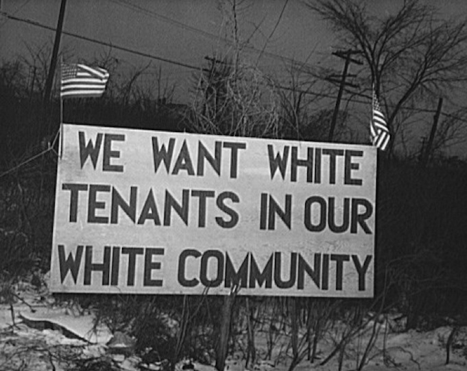

History of Housing Discrimination
During the time people started moving to the U.S. in the 20th century due to jobs they were heavily discriminated against in the housing options they received
At the start of the 20th century millions of citizens of all ethnicities were getting jobs in the growing commercial centers. Even though whites and blacks were doing the same work only the White americans were able to purchase homes while African Americans were forced to move into apartments since only a few places would even allow people of color to live there. Between 1946 and 1953, only 347 of 120,000 new homes built in Philadelphia were open to black people showing just how much discrimination there was. This hugely segregated cities, where people of different skin color would live near only people of the same color. Redlining only further increased the segregation with signs such as “hazardous” being posted in areas of African Americans. This would lead to not being able to receive loans. All of this lead to extreme discrimination of African Americans.